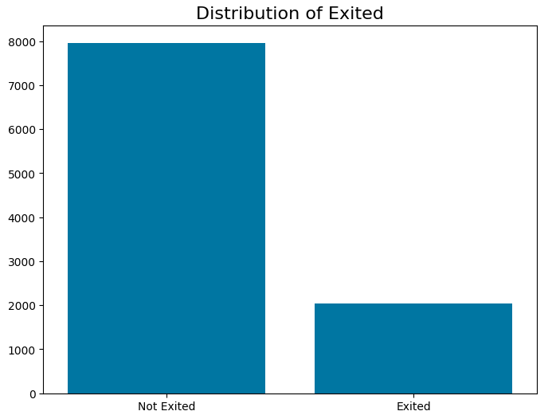

Customer Churn Prediction
Banking Industry Insights & Retention Strategy
Python
Streamlit
Power BI
SMOTE
Random Forest

Banking Industry Insights & Retention Strategy
The bank was grappling with high customer churn, particularly in high-value customer segments. Despite a growing customer base, the bank struggled to predict which customers were at risk of leaving.
Developed machine learning models (Random Forest with SMOTE) and built a Streamlit web app for real-time, interactive predictions of at-risk customers.
Achieved 84.67% accuracy, identified high-risk segments, and potentially saved €1.5 million in annual revenue by targeting high-balance customers.
Customer churn in banking severely impacts profitability, especially with high-value customers. Without clear prediction methods, retention efforts were inefficient and misdirected.
The bank lacked an effective strategy to predict at-risk customers, leading to unnecessary resource allocation while missing valuable high-risk customers.
| Objective | Metric Tracked | Result Achieved |
|---|---|---|
| Identify churn predictors | Accuracy, AUC-ROC | Achieved 84.67% accuracy with Random Forest |
| Prioritize retention for high-risk customers | Churn rate, false positives | Reduced false positives to 244, improving retention targeting |
| Improve model precision | F1-Score | Achieved an F1-Score of 0.8969 after model calibration |
The dataset consists of 10,000 rows representing bank customers, sourced from Kaggle.
Class Imbalance: Churned customers represented only 20% of the dataset. SMOTE was applied to generate synthetic samples of the minority class.
Gathered 10,000 customer records and performed standardization/normalization
Identified key patterns and correlations in the data
Evaluated multiple algorithms and selected Random Forest
Optimized parameters using GridSearchCV
Built Streamlit app for real-time predictions
| Model | Accuracy | Precision | Recall | F1-Score |
|---|---|---|---|---|
| Logistic Regression | 70.21% | 68% | 66.7% | - |
| Decision Tree | 75.50% | 74% | 72.5% | - |
| Random Forest | 84.30% | 82.4% | 87.5% | 85.0% |
| XGBoost | 84.79% | 83.5% | 88.2% | 85.7% |
| ANN | 79.76% | - | 75.5% | - |
| KNN | 75.55% | - | - | 73.4% |
Based on evaluation, Random Forest was selected for its balanced performance with 84.30% accuracy, excellent recall (87.5%), and good precision (82.4%).
Using GridSearchCV, the following optimal parameters were selected:
The final model achieved 84.67% accuracy and F1-score of 0.8969, optimizing the trade-off between precision and recall.
What: Middle-aged customers (45–64 years) showed the highest churn rates.
So What: The bank risks losing a significant portion of its customer base if proactive measures aren't taken.
What: Customers with higher account balances (>€200K) exhibited the highest churn likelihood.
So What: Focusing on high-balance customers is crucial for retention, potentially saving €1.5 million annually.
What: France shows a higher churn rate compared to Germany and Spain.
So What: Tailored retention strategies specific to France can help reduce churn in this important market.
Prioritize retention efforts for customers with balances above €200K by offering loyalty rewards and personalized services.
Potential Value: 10% churn reduction could save €1.5 million annually
Target this demographic with personalized incentives like lower fees and exclusive investment offers.
Potential Value: 5% reduction in churn could save €500,000 annually
Implement France-focused retention campaigns with region-specific offers.
Potential Value: 8% churn reduction in France could save substantial revenue
Optimize the model to reduce the 244 false positives, improving resource allocation.
Potential Value: Save 15% in retention-related costs
Monitor customer behaviors and predict churn in real-time to enable timely interventions.
Potential Value: 5% reduction in churn could save €500,000 annually
| Priority | Recommendation | Expected Impact | Owner |
|---|---|---|---|
| High | Retention campaign for high-balance customers | Reduce churn by 10% in high-value segments | Marketing Team |
| Medium | Focus on middle-aged customers | Reduce churn by 5% in this demographic | Customer Success |
| High | Region-specific campaigns for France | Reduce churn by 8% in France | Marketing/Regional Teams |
| Low | Refine model calibration | Save 15% in retention costs | Data Science Team |
| High | Real-time churn prediction | Reduce churn by 5% through timely interventions | Technology & Operations |
Current model uses demographic and account data. Adding behavioral features could enhance accuracy.
SMOTE was applied but model may still be slightly biased toward majority class.
Model trained on historical data may not account for current market shifts.
Geographic differences considered but not deeply modeled.
Random Forests are powerful but non-interpretable.
Add transaction frequency and customer interaction history.
Use Balanced Random Forest to reduce bias toward majority class.
Re-train with updated data quarterly to adapt to new trends.
Implement tailored strategies for high-risk regions like France.
Use SHAP or LIME for explainable insights.
Integrate predictions into real-time CRM systems.
View the complete analysis and model development in a single notebook:
View Jupyter NotebookExplore interactive dashboards created for customer churn analysis and business insights.
This dashboard provides a summary of churn rates, key segments, and overall business impact.

This dashboard visualizes retention strategies, segment targeting, and predicted savings.